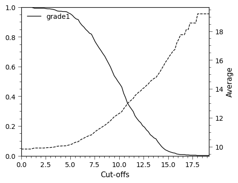
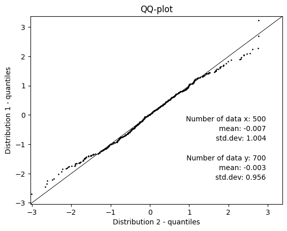

6. Plotting¶
Generalistic plots for data analysis.
6.1. Boxplots¶
A variety of boxplots for analysis of point data.
6.1.1. Boxplots¶
- resourcegeo.plots.boxplots.data_by_category(data, var, catcol, tmin=None, use_all=True)¶
Convert df with category to list of arrays vals + labels.
Return: df_values (list[np.array]): array-values for each category df_labels (list[str]) : Categorical labels
- resourcegeo.plots.boxplots.boxplot_by_category(data, var, catcol, cats=None, tmin=None, yscale='linear', ylabel=None, xlabel=None, title=None, flname=None, markersize_flier=2, markersize_mean=4, widths=None, figsize=None, ylim=None, stats=True, use_all=True)¶
Plot boxplots of by category. Optionally add unweighted statistics.
- Parameters:
data (pd.DataFrame) – df with values and category column
var (str) – column name for variable
catcol (str) – column name for category column
cats (optional) – Categories to consider from catcol
tmin (float, optional) – Minumum var value to filter data
yscale (str) – y-axis scale
Examples:
import resourcegeo as rs df = rs.BaseData('assay_geo').data _ = rs.boxplot_by_category(data = df,var = 'CUpc',catcol = 'UNIT', tmin=0,markersize_mean=3,markersize_flier=0.1,widths=0.5, ylim=(0,2),figsize=(10,6),stats=False,use_all=False,ylabel='CUpc')

- resourcegeo.plots.boxplots.boxplot_by_category_sensitivity(dfs, var, catcol, yscale='linear', markersize_flier=2, markersize_mean=4, flname=None, figsize=None, title=None, xlabel=None, ylabel=None, bulkstats=True, coverage=0.75)¶
Grouped boxplots for one-variable grouped by categories. Useful for sensitivity results.
- Parameters:
dfs (list[pd.DataFrame]) – list of DataFrame(s)
var (str) – shared variable column-name in all df in dfs
catcol (str) – shared category column in all df in dfs
Examples:
import resourcegeo as rs df = rs.BaseData('assay_geo').data df2 = df.loc[df['UNIT'].isin([f'{i}' for i in range(1,9)] + ['OVB'])].copy() df3 = df2.copy() df3['CUpc'] = df3['CUpc'] +0.1 df4 = df2.copy() df4['CUpc'] = df3['CUpc'] +0.2 dfs = [df2,df3,df4] rs.boxplot_by_category_sensitivity(dfs,'CUpc','UNIT',figsize=(14,4))
6.2. Bar Charts¶
Bar Charts.
6.2.1. Drilling¶
- resourcegeo.plots.drilling.drilling_by_year(df, var, cat, cat2=None, xlabel=None, ylabel=None, title=None, flname=None, figsize=(14, 4), cat2_colors=None, legend_loc=None, width=1)¶
- Generates a stacked bar plot by based on a continuous variable
and two categorical columns.
- Parameters:
df (pd.DataFrame) – df with continuous variable and two categorical columns
var (float) – Continuous variable to summarize sums
cat (str) – Column name for categorical that contains a sequence of integers to use in the bar chart. e.g. years
cat2 (str) – Column name for categorical values to be stacked
xlabel (str,optional) – x-axis label
ylabel (str,optional) – y-axis label
title (str,optional) – title for the plot
flname (str,optional) – path to save image
figsize (tuple) – figure size
cat2_colors (dict) – dictionary for user defined colors.
legend_loc (int) – position of the legend
width (float) – with of the bars in the bar chart
Examples:
import resourcegeo as rs df = rs.BaseData('collar').data drill_type= 'drilltype' df.loc[df[drill_type].isna(),drill_type]= 'Undefined' rs.drilling_by_year(df,var='length',cat='year',cat2=drill_type, xlabel='Collar year',ylabel='Length Drilled')

6.3. Scatters¶
Scatter plots.
6.3.1. Resource Model¶
- resourcegeo.plots.tongrad.tonnage_grade_curve(dfs, var_col, cutoffs=None, weight_col=None, as_fraction=True, ylim1=None, ylim2=None, xlim=None, title=None, flname=None, xlabel=None, ylabel=None, ylabel2=None, fontsize=11, lw=1, figsize=(5, 4))¶
Generate tonnage-grade curve for one df of multiple dfs. For multiple variables within each df.
- Parameters:
dfs (df or list[df]) – Data with a at least one column of values
var_col (str or list[list[str]]) – column-name(s) of variables in a df
cutoffs (list[float],optional) – cut-offs values. If None, 100 cutoffs between min-max values are chosen
weight_col (str,optional) – column-name if all dfs with values to weight the grade values. WARINING: Al df’s must have the same weight_col name.
as_fraction (bool, optional) – If True, it shows tonnage axis as 0-1 fraction. If False, shows summ of the weights.
ylim1 (tuple) – limit values for main y-axis (weight sum)
ylim2 (tuple) – limit values for secondary y_axis (average grades above cutoff)
xlim (tuple) – limit values for x-axis (cutoffs)
title (str) – plot title
flanme (str) – path to store plot. It does not create folders
fontsize (float) – overall font size
lw (float) – line width for GT curves
figsize (tuple) – figsize
6.3.2. Distributions¶
- resourcegeo.plots.qqplot.qq_plot(d1, d2, percentiles=None, ms=1, xlim=None, ylim=None, flname=None, ylabel=None, title=None, xlabel=None, figsize=None, fontdict=None)¶
QQ-plot with two given distributions. Lengths of the distributions may be different. Alternatively add percentiles and summary stats.
- Parameters:
d1 (np.array or list[float]) – distribution in x-axis
d2 (np.array or list[float]) – distribution in y-axis
percentiles (list[float]) – percentiles from 0-100 included
ms (float) – marker size
xlim (tuple[float]) – x-axis limits
ylim (tuple[float]) – y-axis limits
flname (str) – path to save plot
figsize (tuple(float)) – figure size
- Returns:
None
- resourcegeo.plots.probability_plot.probability_plot(data, figsize=None, xscale='log', fontsize=10, ms=1, ax=None, label=None, color=None, xlim=None, title=None, xlabel=None, ylabel=None)¶
Creates a probability plot of an input distribution.
- Parameters:
data – input data to plot
figsize (tuple) – Figure size
xscale (str) – x-axis scale, it can be ‘log’ or ‘linear’
Examples:
import resourcegeo as rs df = rs.BaseData('assay_geo').data _ = rs.probability_plot(df['CUpc'])

6.4. Sensitivity¶
Sensitivity plots.
- resourcegeo.plots.deviation.deviation_plot(x, y, base, flname=None, title=None, y1_label=None, y2_label=None, xlabel=None, hline_label='base', dev_ylim=0.2)¶
Plot deviations with respect a base value after performing a sensitivity analysis.
- Parameters:
x (list[float]) – x values of the sensitivities
y (list[float]) – results from the multiple x-values
base (float) – Reference value around where deviation is calculated.
dev_ylim (float) – fraction of the base to use as +/- in (right) y-axis
xlabel (str) – x-axis label
y1_label (str) – Left y-axis of sensitivity results
y2_label (str) – Right y-axis for percentages of deviation from base value
title (str,optional) – title of the graph
flname (str,optional) – path to save figure
- Returns:
None
Examples:
import resourcegeo as rs import random import numpy as np n, ref = 15, 30 a = np.linspace(1,n+1,n) s = np.random.normal(0, 0.5, n) b = [ref+j for j in s] rs.plots.deviation.deviation_plot(a,b,ref)
